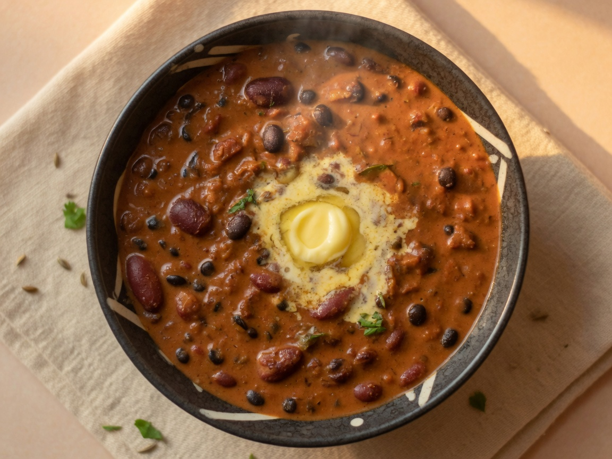

MonLunch
Dal makhani + quinoa + salad + yogurt
250 g dal makhani · 150 g quinoa · 80 g salad · 150 g yogurt
Dinner
Lauki chana dal + aloo gobi + quinoa
250 g lauki dal · 150 g aloo gobi · 150 g quinoa
Day total (L+D)~1215 kcal